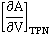

'...water has the remarkable property of being more compressible in winter than in summer..'
John Canton 1764 j
 The density
of ice increases on heating (up to 70 K)
The density
of ice increases on heating (up to 70 K)
 Water expands on freezing
Water expands on freezing
 Pressure reduces ice's melting point
Pressure reduces ice's melting point
 Cold liquid water has a high-density
that increases on warming (up to 3.984 °C)
Cold liquid water has a high-density
that increases on warming (up to 3.984 °C)
 The surface of water is denser than the bulk
The surface of water is denser than the bulk
 Pressure reduces the temperature of maximum
density
Pressure reduces the temperature of maximum
density
 There is a minimum in the density
of supercooled water
There is a minimum in the density
of supercooled water
 Water has a low coefficient of expansion
(thermal expansivity)
Water has a low coefficient of expansion
(thermal expansivity)
 Water's thermal expansivity reduces increasingly
(becoming negative) at low temperatures
Water's thermal expansivity reduces increasingly
(becoming negative) at low temperatures
 Water's
thermal expansivity increases with increased pressure
Water's
thermal expansivity increases with increased pressure
 The number of nearest neighbors increases
on melting
The number of nearest neighbors increases
on melting
 The number of nearest neighbors increases
with temperature
The number of nearest neighbors increases
with temperature
 Water has unusually low compressibility
Water has unusually low compressibility
 The compressibility drops as temperature
increases up to 46.5 °C
The compressibility drops as temperature
increases up to 46.5 °C
 There is a maximum in the compressibility-temperature relationship
There is a maximum in the compressibility-temperature relationship
 The speed of sound increases with temperature
up to 74 °C
The speed of sound increases with temperature
up to 74 °C
 The speed of
sound may show a minimum
The speed of
sound may show a minimum
 'Fast sound' is found at high frequencies and shows a discontinuity at higher pressure
'Fast sound' is found at high frequencies and shows a discontinuity at higher pressure
 The NMR spin-lattice relaxation time is very
small at low temperatures
The NMR spin-lattice relaxation time is very
small at low temperatures
 The NMR shift increases to a maximum at low (supercooled) temperatures
The NMR shift increases to a maximum at low (supercooled) temperatures
 The refractive index of water has a maximum
value at just below 0 °C
The refractive index of water has a maximum
value at just below 0 °C
 The change in volume as liquid changes to gas is very large
The change in volume as liquid changes to gas is very large
The expansion of ice , from [382]
Most solids expand and become less dense when heated. Hexagonal, cubic, ice XVI, and low-density amorphous ice all become denser at low temperatures [3783a]. However, all expand slightly with cooling at all temperatures below about 70 K [209a] with a minimum thermal expansivity at about 33 K (expansion coefficient (α) ≈ -0.000003 K−1). This low-temperature expansion appears to be due to alteration in the net bending motion of three tetrahedral hydrogen-bonded molecules with temperature, as higher frequency modes are reduced [209b]. This phenomenon is similar but unrelated to the maximum density anomaly that occurs in liquid water. Interestingly, the density maximum for hexagonal ice is about 72 K at ambient pressure, and this is the maximum temperature for its catalyzed phase transition to ice XI. Over the range, 80-160 K, the density of high-density (HDA) amorphous ice decreases on isobaric heating above ≈ 0.35 GPa but increases at lower pressures [1688].
A further ice density anomaly concerns the high molar volume of heavy water hexagonal ice compared with that of light water [382] (see above right). A lower density is usually expected for such isotopic changes due to the intramolecular vibrational O–H stretching modes [2882] of the hydrogen bonds. Similar anomalous behavior is expected in ices Ic, III, V, IX, XII, XIII, XIV, and XVI.
Accurate and precise lattice parameters for H2O ice Ih and D2O ice Ih have been determined between 1.6 K and 270 K. [3278]
[ Anomalies page: Back to Top
Anomalies page: Back to Top  ]
]
Arctic sea ice
Changes in the molar volume of water and ice
down the melting point curve, from [561]
It is usual for liquids (even hydrogen-bonded liquids like ethanol and hydrogen peroxide) to contract on freezing and expand on melting (e.g., liquid oxygen shrinks 19% on freezing, and molten lead shrinks 6.4% on freezing). This is because the molecules are in fixed positions within the solid but require more space to move around within the liquid. Other materials that expand on freezing are silicon, gallium, germanium, antimony, and bismuth.
When water freezes at 0 °C, its volume increases by about 9% under atmospheric pressure; therefore, ice floats on water (see above). If the melting point is lowered by increased pressure, the increase in volume on freezing is even more significant (for example, 16.8% at -20 °C [561]). The molar volumes of ice and water along the melting point curve [561] are shown right. The expansion of ice, compared with liquid water, is why erosion is caused by the cracking of rocks when contained moisture freezes
The ice (Ih) structure is open with a low packing efficiency. All the water molecules are involved in four straight, tetrahedrally-oriented hydrogen bonds; for comparison, solid hydrogen sulfide has a face-centered, cubic closed packed structure with each molecule having twelve nearest neighbors [119]. On melting, some of these ice (Ih) bonds break, others bend, and the structure undergoes a partial collapse. Other tetrahedrally arranged solids such as silica (responsible for the Earth's crust floating on the outside of our planet) behave similarly. This is different from most solids, where the extra movement available in the liquid phase requires more space and therefore melting is accompanied by expansion.
In contrast, it should be noted that the high-pressure ices (ice III, ice V, ice VI, and ice VII) all expand on melting to form liquid water. The expansion in volume when going from liquid to solid, under ambient pressure, causes extensive tissue damage in biological organisms on freezing. In contrast, freezing liquid water under high pressure to the more dense ice VI causes ilittle structural damage [535].
Due to the expansion on freezing, an interesting phenomenon is the formation of thin ice spikes that occasionally grow out of (pure water) ice cubes on freezing [564a]. This phenomenon appears to be a general property of any material that expands on freezing [564b].
Antarctic iceberg
As sea ice floats on water, displacing its own weight of water, it is often saidt that when such ice melts (caused by global warming), the water level should not rise. j However, as the ice melts to give fresh (not salty) water, which is less dense than the salty sea water, a very small rise in sea level does occur. The 750 km3 of ice melted each year from our polar ice sheets gives a 50 μm rise in the oceans [1662].
Only about 11% of an iceberg is above water as ice has a density of about 917 kg ˣ m−3 plus a bit from contained dirt and algae but minus a bit from contained air bubbles. In contrast, seawater has a density of about 1028 kg ˣ m−3. Therefore 1000 m3 of seawater will balance about 1121 m3 of ice, and 121/1121 or 11% of the iceberg is above sea level.
The liquid is also denser than the ice is also found for NH4F, which has similar solid structures to water.
[ Anomalies page: Back to Top
Anomalies page: Back to Top  ]
]
How raising the pressure melts ice to water
As discovered in about 1849 by James Thomson, the freezing-temperature of water is lowered by 0.00748 °C ˣ atm−1. k Increasing pressure on liquids usually promotes liquid freezing, shifting the melting point to higher temperatures. This is shown by a forward sloping liquid/solid line in the phase diagram for most liquids. In water, this line is backward sloping with a slope of 13.46 MPa ˣ K−1 at 0 °C, 101.325 kPa (see right). As the pressure increases, the liquid water equilibrium shifts towards a collapsed structure (for example, CS ) with higher entropy. This equilibrium shift lowers the melting free energy change (ΔG = ΔH − TΔS) such that it will be zero (that is, at the melting point) at a lower temperature.
The minimum temperature that liquid water can exist without ever freezing is −21.985 °C at 209.9 MPa; at higher pressures, water freezes to ice-three, ice-five, ice-six, or ice-seven at increasing temperatures, respectively. Stretching ice has the reverse effect; ice melting at +6.5 °C at about −95 MPa negative pressure within stretched tiny aqueous pockets in mineral fluorite [243]. a
Effect of pressure on the melting and freezing points of ice [3123]
It is generally assumed that ice skating (or skiing) does not produce sufficient pressure to lower the melting point significantly, except at very sharp edges or involving powdered ice on the ice surface. The increase in slipperiness is usually generated by frictional heating, perhaps initially involving the ultra-thin surface layer of disorganized and weakly held frozen water (see [1238] for a review).
The underlying slipperiness of water and ice can be explained by the two-state model [1859] that aids the formation of a slipping plane on confinement. The slipperiness of wet surfaces is most significant when one surface is hydrophilic and the other hydrophobic, and least significant when both surfaces are hydrophilic [2085].
Regelation (the phenomenon of melting under pressure and freezing again when the pressure is reduced, such as the movement of a wire through an ice cube that refreezes again after the wire's passage) is often cited as due to the lowering of the melting point of ice under pressure. However, the pressure required for lowering the melting point using a weighted wire may be greater than that provided, and this phenomenon is aided by the heat transfer down the wire, causing localized thawing. However, note that when ice is compressed in the absence of liquid water, the melting temperature is lowered twelve times more than if the pressure is exerted uniformly on water plus ice. k The melting of ice under pressure aids glacier motion. Two-dimensional ice crystals may develop in water confined between graphene and muscovite mica. These form a quasi-liquid layer of water under a critical pressure beyond 6 GPa [3144].
An interesting question concerns what would happen to water, cooled below 0 °C, within a vessel that cannot change its volume. If the increase in volume on freezing is prevented within an isochoric freezing system (a constant volume chamber capable of withstanding the pressures that develop in the system, with minimal deformation [3361]), an increased pressure of up to 25 MPa may be generated in the unfrozen water pipes; easily capable of bursting them in Winterb. If ice forms, its increased volume causes an increase in pressure which would lower the freezing point at least until it reaches the lowest melting point (−21.985 °C) at 209.9 MPa. e A thermodynamic analysis concludes that ice nucleation cannot happen above −109 °C during isochoric cooling [1053], which is close to the upper bound of the realm of deeply supercooled water (−113 °C), so it is unclear if the ice would ever freeze in such an unreal system.
Within a filled and sealed
fixed volume, melting ice may result in a superheated state
where the metastable iso-dense liquid water is stretched, due to its cohesiveness.
relative to its equilibrium state at the (effectively) negative
pressure. Consequently, the ES CS equilibrium ishifts towards the more open ES structure.
[
CS equilibrium ishifts towards the more open ES structure.
[ Anomalies page: Back to Top
Anomalies page: Back to Top  ]
]
The high density of liquid water is due mainly to the cohesive nature of the hydrogen-bonded network, with each water molecule capable of forming four hydrogen bonds.a This reduces water's free volume and ensures a relatively high density, partially compensating for the open nature of the hydrogen-bonded network. Its density, however, is not as great as that of tightly packed, isoelectronic, liquid neon (1207 kg m−3 at 27 K, with molar volume 92.8% of water). It is usual for liquids to expand when heated at all temperatures. Liquid water increases its density (ρ) on heating from supercooled temperatures up to 3.984 °C.
(at the minimum molar volume)
(at the maximum density)
The anomalous temperature-density behavior of water was,perhaps, the first description of an anomalous property of water that Galileo uncoveredm and can be explained as previously [13, 14, 1354, 3358], utilizing the range of environments within whole or partially formed clusters with differing degrees of dodecahedral puckering. c The minimum proton kinetic energy of liquid water also has a maximum at about +4 °C due to the density maximum [2038].
The density of liquid water at the standard atmospheric pressure
The density maximum l (and molar volume minimum) is brought about by the opposing effects of increasing temperature, causing both structural collapses that increase density and thermal expansion that lowers density. Counter-intuitively, the distance between the water molecules decreases [1489] as the density decreases as the supercooling temperature is lowered. The reduction in density is primarily due to the reduction in nearest neighbors and loss of 'interstitial' water [2382]. There is a higher concentration of ES-like clusters at lower temperatures, whereas at higher temperatures, there are more CS-like clusters and fragments. However, the volume they occupy expands with temperature. The change from ES-like to CS-like as the temperature rises is accompanied by positive changes in both entropy and enthalpy due to the less ordered structure and greater hydrogen bond bending, respectively. The temperature dependence of liquid water structure has been described in terms of the O–O radial distribution function, using molecular dynamics [3847].
Temperature distribution in a lake in summer and winter
The density maximum ensures that the bottoms of freezing freshwater lakes generally remain at about 4 °C and unfrozen (see Figure below left). The change in density with temperature causes an inversion in cold water systems as the temperature is raised above about 4 °C. Thus in water below about 4 °C, warmer water sinks, whereas when above about 4 °C, warmer water rises. As the water warms up or cools down through 4 °C, this process causes considerable mixing (see the heating and cooling curves below right [2611]) with beneficial consequences such as an increased gas exchange.
Temperature with depth in a frozen freshwater lake
Heating and cooling profiles for a cylinder of water, from [2611]
![heating and cooling profiles for a cyllinder of water, from [2611]](images/cooling.gif "heating and cooling profiles for a cyllinder of water, from [2611]")
Shown below is the variation of the density of ice, liquid water, supercooled water, and water vapor, in equilibrium with the liquid, with temperature (the orthobaric density).
Ice, liquid water, and water vapor, in equilibrium with the liquid
The diagram right helps explain why liquid water cannot exist above the critical point (C.Pt.). Also shown (inset) is the variation of the molar volume of liquid water with temperature about the density maximum (at 3.984 °C). Note the unusual and rapid approach of the densities of supercooled water and ice (estimated at -50 °C, 100 kPa [580]) at about the homogeneous nucleation temperature (≈ -45 °C, 101 kPa). This approach moves to lower temperatures at higher pressures, seemingly absent at ≈ 200 MPa [561] (see below, D5).
The effect of Li+, Na+, K+, Mg2+, and Ca2+ chlorides and sulfates on the temperature of maximum density (TMD) of aqueous solutions at room pressure. has been investigated [4453]. They shift the temperature of maximum density of the solutions to lower temperatures and flatten the density vs temperature curves with increasing salt concentration with Na+, Ca2+, and SO42− inducing the largest changes.
Densities and density maxima of H2O, D2O, and T2O compared
The occurrence of a density maximum, as in water, is sometimes, if only rarely, found (or predicted) in other liquids, such as He, GeO2, Te, BeF2, Si, Ge, C, and SiO2, for a variety of reasons. A comparison of the densities and density maxima (shown right; mouse over for molar volumes and molar volume minima) of H2O, D2O, and T2O.
The effect in liquid He4 is due to zero-point energy. A similar reason has been put forward for water [1301], although in practical terms, this presents a related if alternative approach to that given above.
Pressure - temperature relationship at constant volume
Inversely related to changes in densities are the changes in volumes. Opposite are shown pressure-temperature curves of liquid water at constant volume, showing the change in pressure that would occur with temperature using a (theoretically ideal) constant volume container. There is a minimum in the curve only for volumes greater than 0.986 cm3 g−1. The data were obtained from the IAPWS-95 equations [540].
The variation of density of liquid water with temperature and pressure is shown below. The right-hand curves continue (metastably) at low temperatures for several MPa of negative pressure [1887].
Changes in the density of water with temperature and pressure
Density changes with pressure at 250 K, [3249].
The behavior of density on increasing pressure of cold TIP5P water (see left) shows two distinct areas, below 200 MPa and above 600 MPa [3249]. Analyses of the proton NMR chemical shift and of the relaxation time confirm the structure-breaking effects of the pressure [3695].
[ Anomalies page: Back to Top
Anomalies page: Back to Top  ]
]
Ellipsometry from [1482]
The structure of the surface of water generates much controversy and presents a confusing picture. However, thermodynamics and experimental evidence both suggest that, at lower temperatures and in contrast to other liquids, the surface in contact with the air is denser than the bulk liquid. Thermodynamics (see elsewhere) can be used to derive ; a measure of the difference in density between the surface density and the bulk density. This shows that surface water density varies less with temperature than the bulk at low temperatures and equals it at 3.984 °C. The refractive index of the water surface at 22 °C is higher than that of the bulk and opposite in behavior to other liquids (for example, ethanol) [1482]. Thus, this surface water behaves like water at a lower temperature and has a higher density. i Related to this phenomenon are the anomalously fast and efficient intermolecular vibrational energy transfer processes at aqueous interfaces [1816]. [ Anomalies page: Back to Top
Anomalies page: Back to Top  ]
]
Density maxima shifts with pressure
Increasing pressure shifts the water equilibrium towards a more collapsed structure (for example, CS). So, although pressure will increase the density of water at all temperatures (flattening the temperature density curve), there will be a disproportionate effect at lower temperatures. Increasing pressure shifts the water equilibrium towards a more collapsed structure (for example, CS). So, although pressure will increase the density of water at all temperatures (flattening the temperature density curve), there will be a disproportionate effect at lower temperatures.
The temperature of maximum density as a function of pressure, [1860]
The result is a shift in the temperature of maximum density to lower temperatures. At high enough pressures, the density maximum is shifted to below 0 °C (at just over 18.84 MPa). Above 28.33 MPa, it cannot be observed above the melting point (now at 270.97 K), except in supercooled water [1860], and it cannot be observed at all above about 200 MPa, where it encounters the homogeneous nucleation limit. The stronger and more linear hydrogen bonding in D2O gives rise to a 25% smaller shift in the temperature of maximum density (from 11.185 °C at 0.1 MPa) for increasing pressure [726].
Under negative pressure (that is, increased stretching of liquid water) the temperature of maximum density increases to +17.8 °C (-116 MPa, 939.6 kg m−3, [1945]) and +18.2 °C (-137 MPa, [2993]. However, the temperature of maximum density shows this as a maximum for the pressure in this negative pressure region [419], as the hydrogen bonds are stretched beyond the breaking point at more negative pressures. Using models, the line of density maxima retraces to lower temperatures at even more negative pressures [3294].
A similar effect may be caused
by increasing salt concentration, which behaves like increased
pressure in breaking up the low-density clusters. Thus
in 0.36 molal NaCl, the temperature of freezing and maximum
density coincide at -1.33 °C. Higher salt concentrations
reduce the temperature of maximum density such that it is
only accessible in the supercooled liquid. Lowering the temperature of maximum density is not a colligative property as both the nature and concentration of the solute d affects the degree of lowering. [ Anomalies page: Back to Top
Anomalies page: Back to Top  ]
]
The density of liquid/glassy water
As the density increases below 200 K, there must be a minimum density anomaly below the maximum density anomaly, so long as no phase change occurs. This minimum density anomaly was first seen in simulations [498] and is expected to lie below the minimum temperature accessible on supercooling (232 K, [215]) and close to where both maximum ES structuring and compressibility occur, with the liquid density close to that of hexagonal ice (latterly confirmed [871]). Most anomalous behavior must involve a sudden discontinuity at about the homogeneous nucleation temperature (≈ 228 K). It is where the densities of supercooled water and ice approach and as the tetrahedrally arranged hydrogen-bonding approaches its limit (two acceptor and two donor hydrogen bonds per water molecule). No further density reduction is possible without an energetically unfavorable stretching (or breaking) of the bonds. By use of optical scattering data of confined water and a model that divides the liquid water into two forms of low and high-density, the density minimum has been proposed to lie at 203±5 K [1325], shown opposite, redrawn from [1722] where the blue line shows determinations on the confined water.
A density minimum at 210 K has been experimentally determined in supercooled D2O contained in 1-D cylindrical pores of mesoporous silica [1195]. Although possibly related, density values obtained for confined water cannot be taken as necessarily giving the density minimum for the bulk supercooled liquid, however [2045]. [ Anomalies page: Back to Top
Anomalies page: Back to Top  ]
]
The thermal expansivity (αP) is the fractional change in volume with respect to temperature at constant pressure;
where βT, αP, kB, P, T, N, ρ, V, H, and S are the isothermal compressibility, thermal expansion, Boltzmann constant, pressure, temperature, number of molecules, density, volume, enthalpy, and entropy, respectively; the <> brackets indicate the fluctuations in the values about their mean values [1481].
The thermal expansivity (αP) is negative below and positive above 3.984 °C, (see density and expansivity anomalies). As the temperature increases above 3.984 °C, the cluster equilibrium shifts towards the more collapsed structure (for example, CS), which reduces any increase in volume due to the increased kinetic energy of the molecules.
Usually, the larger the volume
a molecule occupies, the larger the disorder (entropy) [2201]. The expansion coefficient is related to the correlations between entropy and volume fluctuations. In contrast to most other liquids, in which entropy and volume fluctuations positively correlate, ΔS and ΔV are anti-correlated in water below +4 °C, with a decline in volume fluctuations associated with an enhancement of entropy fluctuations. In water, the more open structure (for example, ES)
is also more ordered; that is, as the volume of liquid water increases on lowering the temperature below about +4 °C, the entropy of liquid water reduces.
[ Anomalies page: Back to Top
Anomalies page: Back to Top  ]
]
Changes in thermal expansivity, from [68] and [1970]
Supercooled and cold (< 3.984 °C) liquid water both contract on heating [68]. As the temperature decreases, the cluster equilibrium shifts towards the expanded, more open structure (for example, ES), which more than compensates for any decrease in volume due to the reduction in the kinetic energy of the molecules. It should be noted that this behavior requires that the thermodynamic work (dW) equals -pΔV rather than the usual +pΔV (pressure times change in volume) [404]. If water acted like most other liquids at lower temperatures, the behavior expected is shown as the blue dotted line opposite. The solid blue line shows the expansivity of ice. Also, for water and other materials with negative thermal expansivity, both and are negative [1147] whereas usually both are positive.
The expansivity-temperature curve crosses the zero expansivity line at the maximum and minimum in the density-temperature curve [1970]. The thermal expansivity reaches a minimum (when most of liquid water is in the expanded, more open, structure. Then, the expansivity increases to positive values on lowering the temperature further, in line with the more typical behavior of materials, if sufficiently low temperatures could be reached. This minimum phenomenon has been shown to occur in confined liquid water at about 225 K [1604b]. [ Anomalies page: Back to Top
Anomalies page: Back to Top  ]
]
The range of temperatures and pressures where
the thermal expansion increases with increased pressure
The thermal expansion of water (αP) increases with increased pressure up to about 44 °C in contrast to most other liquids where thermal expansion decreases with increased pressure. This increase is due to the collapsed structure of water having a greater thermal expansivity than the expanded structure and the increasing pressure shifting the equilibrium towards a more collapsed structure.
The ranges of temperatures and pressures where the thermal expansion increases with increased pressure are shown on the right (blue area).
The thermal expansion coefficient as a function of pressure,
from [2081,4142]. The dashed line show confined water.
Expansivity-temperature curves, drawn at increasing pressures (see left), all cross at about 316 K (αP = 0.44 ˣ 10−3 K−1) [1970, 2201] (the crossover for D2O is about 325 K [2201]). Note that 316 K is also the temperature when the compressibility change with temperature has a minimum that is independent of pressure. This follows from the relationship
[2081]
It has been proposed that, below this temperature (316 K), the local order in water changes, and the lifetime of the local hydrogen bond network becomes long enough to gradually develop the characteristic tetrahedral network of water; the low-density water network [3696]. Above 200 MPa, the water hydrogen bonding develops separate interpenetrating networks.
[ Anomalies page: Back to Top
Anomalies page: Back to Top  ]
]
Each water molecule in hexagonal ice has
four nearest neighbors. On melting, the partial collapse of the
open hydrogen-bonded network allows nonbonded molecules to approach
more closely, increasing this number. Usually, in a liquid, the
movement of molecules, and the extra space available, means that it becomes less likely that they will be found close
to each other; for example, argon has precisely twelve nearest neighbors
in the solid state but only an average of about ten on melting.
[ Anomalies page: Back to Top
Anomalies page: Back to Top  ]
]
If a water molecule is in a fully hydrogen-bonded structure with
strong, straight hydrogen bonds (such as hexagonal
ice), it will only have four nearest neighbors. In the liquid
phase, molecules approach more closely due to the partial collapse
of the open hydrogen-bonded network. As the temperature of liquid
water increases, the continuing collapse of the hydrogen-bonded
network allows nonbonded molecules to approach more closely so increasing
the number of nearest neighbors. This is in contrast to normal liquids
where the increasing kinetic energy of molecules and space available
due to expansion, as the temperature is raised, means that it becomes
less likely that molecules will be found close to each other.
[ Anomalies page: Back to Top
Anomalies page: Back to Top  ]
]
Although commonly erroneously thought to be incompressible, water has been understood to be compressible for over 250 years [2023]. Water has unusually low compressibility (0.46 GPa−1) that aids the pumping of our blood. It may be considered that water should have high isothermal compressibility (βT) and adiabatic compressibility (βS), as the large cavities in liquid water allow plenty of scope for the water structure to collapse under pressure without water molecules approaching close enough to repel each other.
where βT, βS, αP, kB, P, T, N, ρ, V, H, and S are the isothermal compressibility, adiabatic compressibility, thermal expansion, Boltzmann constant, pressure, temperature, number of molecules, density, volume, enthalpy, and entropy, respectively; the <> brackets indicate the fluctuations in the values about their mean values [1481]. Water's compressibility at constant temperature (βT) depends on fluctuations in its density. These fluctuations are expected to reduce with thermal motions in typical liquids as the liquid cools down. This is not the case for water below 46.5 °C (see below). The deformation causes the
growth in the radial distribution function peak at about 3.5 Å with increasing or pressure [51]
(and temperature [50]),
due to the collapsing structure. The low compressibility of
water is due to water's high density, again due to the cohesive
nature of the extensive hydrogen bonding. This reduces the
free space (compared with other liquids) to a greater extent
than the contained cavities increase it. Also noteworthy is that solutions of highly compressible
liquids, such as diethyl ether (1.88 GPa−1) in
water, reduce the compressibility of the water as they occupy
its clathrate cavities. D2O has higher compressibility than H2O
at low temperatures (for example, 4% higher at 10 °C but only 2% higher at
40 °C [188]) due
to its stronger hydrogen bonding shifting the ES CS equilibrium towards the more-open ES structure. Water ices also have low compressibilities, reportedly mainly due to the lengthening of the O-H covalent bond as the O···H-O hydrogen bond is compressed [1809].
CS equilibrium towards the more-open ES structure. Water ices also have low compressibilities, reportedly mainly due to the lengthening of the O-H covalent bond as the O···H-O hydrogen bond is compressed [1809].
All the anomalies of 'compressibility' can also be associated with 'bulk modulus' as the bulk modulus of a material is the inverse of the compressibility.
KT = -V ˣ [∂P/∂V]T
Thus, the bulk modulus (K) of water increases as the temperature increases up to a maximum at about 46.5 °C [3956].
[ Anomalies page: Back to Top
Anomalies page: Back to Top  ]
]
In a typical liquid, the compressibility decreases as the structure
becomes more compact due to lowered temperature. In water,
the cluster equilibrium shifts
towards the more open structure (for example, ES ) as the temperature is reduced. It favors the more
ordered structure (that is, ΔG for ES CS becomes more
positive). As the water structure is more open at these lower
temperatures, the capacity for it to be compressed increases
[68].
CS becomes more
positive). As the water structure is more open at these lower
temperatures, the capacity for it to be compressed increases
[68].
Changes of compressibilities with temperature, from [68]
The effect is not a simple dependency on density, however, or else the minimum at 46.5 °C (D2O, ~52 °C) for isothermal (that is, without a change in temperature) compressibility (βT)
βT = -[∂V/∂P]T/V
and the minimum at 64 °C for adiabatic (that is, without loss or gain of heat energy, also called isentropic) compressibility,
βS = -[∂V/∂P]S/V
[112] would both be at the density minimum (4 °C). Relationships between βT and βS are given elsewhere.
Compressibility depends on fluctuations in the specific volume (or density). These will be large where water molecules fluctuate between being associated with a more open structure or not and between the different environments within the water clusters [1899]. At high pressures (for example, ~200 MPa) this compressibility anomaly, although still present, is far less apparent [706]. However, it remains, at about the same temperature ( ~42 °C ±5 °C for pressures 0.1 - 400 MPa, with values that decrease as P increases) [1970], in line with the maximum extent of the diffusion anomaly. Note that 42 °C is also the temperature when all the expansivity-temperature curves, drawn at increasing pressures, cross. This follows from the relationship [2081],
The isothermal compressibility of supercooled water gives an apparent power-law relationship in the temperature range
from 280 K down to the temperature of maximum compressibility at 229 K
where KT is the isothermal compressibility, KT,0 is 0.299 GPa−1), ε = (T - TS )/TS is the reduced temperature, TS = 219.6 K, and γ is 0.40 [3502].
Unusually, the highly significant differences in compressibility between supercooled water and hexagonal ice increase further as the temperature is lowered even as their densities approach similar values.
Formamide
The light scattering intensity (Rayleigh ratio) is obtained by multiplication of ßT by
the absolute temperature. It gives a minimum at about 22 °C (24.6 °C, [3944b) for H2O and at about 28 °C for D2O [3944a].
Some other liquids, such as formamide (see right; also extensively hydrogen-bonded [3157]), show a compressibility minimum. The motions of aqueous formamide are completely slaved to those of the surrounding water [3341].
[ Anomalies page: Back to Top
Anomalies page: Back to Top  ]
]
Modeled compressibility of supercooled water,
from [1794]
At sufficiently low temperature, there must be a maximum in this compressibility-temperature relationship. This is so long as no phase change occurs, as the compressibility decreases with reducing temperature at much lower temperatures. This maximum is expected to lie just below the minimum temperature accessible on supercooling (232 K, 0.1 MPa, [215]) close to the temperature of minimum density. The graph right is from [1794], whereas 2017 experiments indicate the maximum in the isothermal compressibility to be at about 229 K (H2O) or 233 K (D2O) [3134]. The maximum has its greatest value at 180 MPa and 197.5 K [3734].
Modeling studies using TIP4P/2005 have shown that this maximum goes to lower temperatures at higher pressure and increases to higher temperatures under negative pressure [2668 ].
Isothermal - adiabatic compressibility
from [1982]
There is also a maximum in the difference between the isothermal (βT) and adiabatic (βS) compressibilities [1982] (see left), where the blue line is bulk water, the red line is from confined water, and
A further compressibility maximum (∼4.1 GPa−1) corresponds to the water liquid-vapor critical point (P ~20 MPa and T ~ 647 K).
Sound is a longitudinal pressure wave, whereby the energy propagates as deformations in the media. The molecules then return to their original positions and are not propagated. The propagation of a sound wave depends on the transfer of vibration from one molecule to another. Transverse waves may form at the surface of liquid water (ripples, ocean waves) but do not persist in bulk liquid water.
Longitudinal wave Transverse wave
In a typical liquid, the speed of sound is faster (see fast sound) and decreases as the temperature increases at all temperatures. The speed of sound in water is over four times greater than that in the air (≈ 340 m ˣ s−1).
The speed of sound (u) is given by u2 = 1/βSρ = [δP/δρ]S
[802] where βS is the adiabatic compressibility, ρ is the density, P the pressure, and S is the entropy. The anomalous natures of the adiabatic compressibility and the density are described above (compressibility, density).
Changes in the speed of sound with temperature, from [67]
At low temperatures, both compressibility and density are high, so causing a lower speed of sound. As the temperature increases, the compressibility drops and goes through a minimum, whereas the density goes through a maximum and then drops [67]. This maximum is easily explained using the 2-state hypothesis [3086]. The supercooled data has been calculated for the graph, right.
The combination of these two properties leads to the maximum in the speed of sound. Increasing the pressure increases the speed of sound and shifts the maximum to more elevated temperatures (see below left [3056]), both in line with the effect on the density. Reducing the pressure lowers the speed of sound and shifts the maximum to lower temperatures (47 °C at -125 MPa [2993]).
The effect of pressure on the speed of sound, from [3056]
The presence of salt causes small shifts in the temperature maximum in line with the Hofmeister series, reducing the temperature at higher concentrations. Ionic kosmotropes cause a slight increase in the temperature maximum at low concentrations [921].
There is a discontinuity in the speed of sound response to pressure that occurs at 290 MPa and 293 K consistent with continuous phase transition to interpenetrating hydrogen-bonded networks at the higher pressures, as seen with other anomalies [1374]. The speed of sound in supercritical water is given in [1625].
In 2019, more accurate speeds of sound in water were reported between 0.1 and 700 MPa, and from 353 K down to the melting curves of the ice phases. Improvements were noted above 100 MPa [3595ab]. Also, the speed of sound measurements in deuterium oxide (D2O) have been deternibed between 276.97 K and 363.15 K and at pressures up to 210 MPa [3595c].
[ Anomalies page: Back to Top
Anomalies page: Back to Top  ]
]
Deviation of the speed of sound at low temperatures and
moderately high frequencies, from [1151]
Depending on the frequency, there may be a minimum in the speed of sound with respect to temperature at low temperatures [568]. Although this may be thought due to compensation in the changes in density decrease and compressibility increase with lowering temperatures, this is not apparent in the calculated data above. It is most likely due to the increasing strength of its hydrogen bonding and consequential transition to 'fast sound' at lower frequencies (see below). The data opposite is from [1151]. There may be a minimum in the speed of sound with respect to density (-12 °C, about 1320 m ˣ s−1, 0.98 g ˣ cm−3) at low temperatures with a maximum at an even lower density (-12 °C, about 1350 m ˣ s−1, 0.94 g ˣ cm−3) [2056]. The effect of salt on this anomaly at constant volume and negative pressure has been investigated [3877].
The speed of sound in the oceans has a minimum at about 1000 m, where the increase in speed due to increasing pressure balances the decreasing speed with a drop in temperature. Sound waves are trapped and propagate horizontally in this SOFAR channel.
Early experiments concerning determining the speed of sound in water have been described [3106].
[ Anomalies page: Back to Top
Anomalies page: Back to Top  ]
]
Water has a second sound 'anomaly' (called 'fast sound')
concerning the speed of sound. Over a range of high frequencies
(> 4 nm−1) liquid water behaves as though
it is a glassy solid rather than a liquid and sound travels
at about twice its normally observed speed (≈ 3200 m ˣ s−1; similar
to the speed of sound in ice Ih). There is little effect of temperature below 20 °C [1151]. At lower temperatures, the speed of sound increases from its low-frequency value towards the high-frequency value (i.e., 'fast sound') at lower frequencies, giving rise to a minimum in the temperature-speed of sound relationship [1151] (see above). 'Fast sound' is not a true anomaly as this behavior might be expected from a typical liquid, whereas the
(hydrodynamic) lower speed of sound (about 1500 m ˣ s−1)
is due to the hydrogen-bonding network structure of water. However, there is a discontinuity anomaly at
a density of about 1.12 g ˣ cm−1 (about 300 MPa at 273 K) that may indicate a structural rearrangement
[644, 655],
due to the gradual phase transition to interpenetrating hydrogen-bonded networks at the higher pressures, as seen with other
anomalies.
[ Anomalies page: Back to Top
Anomalies page: Back to Top  ]
]
NMR spin-lattice relaxation times
NMR spin-lattice relaxation time (T1, also known as the longitudinal proton relaxation time) depends on the degree of structure. This relaxation time is the time required to establish thermal equilibrium after subjection to a magnetic field. As the water cluster equilibrium shifts towards a stiffer, tetrahedrally organized structure (for example, ES) as the temperature is lowered, the NMR spin-lattice relaxation time reduces far more than would otherwise be expected [53a]. This effect can be partially reversed by increasing the pressure, which reduces the degree of structure. The NMR spin-spin relaxation time (T2 ) below 0°C is strongly correlated with T1 and shows similar behavior [2824], but high temperatures decouple these relaxation times.
Spin-spin and spin-lattice relaxation times, from [2870]
Arrhenius-type plots, see left, show these parallel spin-spin and spin-lattice relaxation times at low temperatures [2870]. The activation energies given by the reciprocal of these lines (1/T1 and 1/T2) is precisely the single hydrogen bond energy 23.3 kJ ˣ mol−1 ˣ K−1.
The NMR spin-lattice relaxation time (and the 17O NMR spin-lattice relaxation time) has a curious logarithmic-linear relationship over a wide temperature range related to the homogeneous nucleation temperature at about -45 °C.
Spin-lattice relaxation times, from [2998]
The behavior under high pressure is also anomalous (see right) [2998], showing a maximum in the 1/T versus -Ln(T1 ) relationship as determined at 100.1 MHz. At such high pressure (200 MPa) water may be easily supercooled to -97 °C. Note that at such high pressures, liquid water tends to form mixtures of intertwined clusters.
[ Anomalies page: Back to Top
Anomalies page: Back to Top  ]
]
NMR shift of water, from [1496]
The NMR shift increases to a maximum at about 214 K in confined water [1496]. The same effect will likely be found in supercooled unconfined water. The variation in NMR chemical shift with temperature correlates with water's hydrogen bonding, and its logarithmic temperature derivative is related to the specific heat and its anomaly [1496].
[ Anomalies page: Back to Top
Anomalies page: Back to Top  ]
]
Changes of the refractive index, from [310]
")
The refractive index of water (λ = 589.26 nm) rises from an estimated 1.33026 at -30 °C to a maximum value at just below 0 °C (1.33434) before falling ever increasingly to 1.31854 at 100 °C [310]. This may be explained by the mixture model [60] applied to the change from ES to CS as the temperature rises; ES possessing a lower refractive index than CS. Most of the effect is due to the density difference between ES and CS. Higher density produces a higher refractive index such that the refractive index temperature maximum lies close to the density maximum, with the slight difference due to the slightly different effect of temperature on the specific refractions of ES and CS.
Additionally, If carefully drawn using the original data (rather than a smoothed curve), there appears to be a possible kink at about 50 °C [2755],
Although not considered anomalous, it is interesting to note that ice has the lowest refractive index (1.31, λ = 589 nm) of any known crystal.
Piezo-optic coefficient, from [2757]
A related phenomenon is the pressure derivative of the refractive index (isothermal piezo-optic coefficient, (δn/δp)t), (see left) which anomalously show minima at about 45 °C, seemingly independent of the wavelength used [2757]. The refractive index of liquid water up to 2.21 GPa at ambient temperature has been reported [4219].
The refractive index of liquid water increases linearly with density approximating to 1+σ/3 where σ is the density (g cm3) and up to about 60 GPa, 2000 K. Outside these conditions, it changes into an opaque (≈ 3500 K, ≈ 70 GPa) and then a reflecting material (≈ 7000 K, ≈ 100 GPa) [2462].
[ Anomalies page: Back to Top
Anomalies page: Back to Top  ]
]
Chip pan fire plus water, from Bidgee
Water is one of the lightest gases but forms a dense liquid. The volume change is the greatest known (except for metals at very high temperatures) at 1603.6 fold, at the boiling point and standard atmospheric pressure. The reason for this is the high boiling point of liquid water for such a small molecule and hence the large volume of gas produced. Compare this with a more typical value of about 800 fold (e.g., O2 804 fold).
This volume change allows water to be of great use in the steam generation of electrical power. Sudden and extreme water heating can give rise to violent steam explosions such as those occurring when volcanic lava meets seawater or the explosively spread fire caused by attempting to extinguish a hot oil kitchen fire by throwing water onto it (see right).
The substantial increase in volume on vaporization allows fine water mists to be used in fighting fires by displacing the oxygen with water vapor [2456].
[ Anomalies page: Back to Top
Anomalies page: Back to Top  ]
]
a There is some dispute over whether such a negative pressure can be reached [917]. [Back]
b Pipes burst due to the rapid formation of a network of feathery dendritic ice [1798] enclosing water which expands on freezing within a now restricted volume to generate the required pressure [354, 3293]. The curious phenomenon of hot water pipes bursting more often than cold water pipes ([959, 1416]) is due to the differences in this dendritic ice formation causing a blockage in the pipes at low percentage ice formation. [Back]
c The change in density is almost mirrored by the size of ortho-positronium bubbles, which are affected by the free volume available and show a minimum at about 8 °C [826]. ortho-Positronium consists of a positron-electron pair with parallel spins [826], created here by positron irradiation of water. [Back]
d The depression in the temperature of maximum density is linearly related to concentration for most solutes (ethanol and methanol are exceptional, giving a slight increase in the temperature of maximum density at low concentrations) [1037], as discovered in 1839 by Despretz. Urea solutions behave strangely, producing a temperature of maximum density at up to ten molal concentrations, with a minimum temperature of maximum temperature (258.6 K) at about six molal [1506]. [Back]
e It would be impossible to reach this pressure in a container unless pressure was also exerted from the outside due to the pressure-induced expansion of the vessel. Water sealed in a steel cylinder in 1871 by Boussingault was still liquid at -18 °C. [Back]
f Others take a contrary view, stating that water's compressibility is twice that expected [53b]. This difference is down to the viewpoint and different theoretical expectations. Water's compressibility is unexpected, either being greater than expected due to water's open structure or less than expected (despite its open structure) due to the cohesive nature of its extensive hydrogen bonding. [Back]
g In liquid methanol (CH3OH), the oxygen atoms are 3% closer than in liquid water. However, its density is 21% less than water due to methanol being able to form only two hydrogen bonds per molecule. [Back]
i A higher refractive index indicaties a higher density or a greater hydrogen bond strength (at equal density). Structured water has higher specific refraction and refractive index for its density [60], but the effect of density changes on the refractive index outweighs that of the specific refraction differences due to water structuring; thus, ice has a density of 91.7% of water and refractive index of 98.2% of water. The thermodynamics confuses this view as at 22 °C thermodynamic arguments suggest the surface is less dense than the bulk (if somewhat less so than other liquids). The opposing views may be reconciled by consideration of the different depths probed by the two methods. [Back]
j There is an interesting discussion over the change in the height of pure water on the melting of floating ice cubes [1776]. [Back]
k Poynting found in 1881 that if only ice is used, in the absence of liquid water, an increase of pressure of 1 atm causes the freezing temperature to sink 0.0899 °C (a depression that is twelve times greater than that which is observed when the pressure is exerted uniformly on the water and the ice.
J. H. Poynting, Change of state: Solid-liquid, Philosophical Magazine, Fifth series, 12 (1881) 32-48. [Back]
l This was first reported in 1684; Essayes of natural experiments made in the Academie del Cimento, under the protection of the Most Serene Prince Leopold of Tuscany (London, 1684). [Back]
m G. Galilei, Discorso al Serenissimo Don Cosimo II Gran Duca di Toscana: Intorno Alle Cose, Che Stanno in sù L’Acqua, ò Che in Quella si Muovono (Cosimo Giunti, Florence, 1612); aa speech to the Tuscan Duke Cosimo II “On the objects that stay on water or that move inside it”; L. Magalotti, Saggi di naturali esperienze fatte nell’Accademia del Cimento sotto la protezione del Serenissimo principe Leopoldo di Toscana e descritte dal segretario di essa accademia (Giuseppe Cocchini all’ Insegna della stella, Florence 1667, Esperienze intorno agli artificiali agghiacciamenti), pp. 127-176; This is the first book produced designed for group efforts at scientific investigation. [Back]
 Phase anomalies (P1-P13) explanations
Phase anomalies (P1-P13) explanations
 Material anomalies(M1-M16) explanations
Material anomalies(M1-M16) explanations
 Thermodynamic anomalies (T1-T11) explanations
Thermodynamic anomalies (T1-T11) explanations
 Physical anomalies (F1-F10) explanations
Physical anomalies (F1-F10) explanations
Home | Site Index | The anomalies of water | Water: Introduction | The icosahedral water clusters | LSBU | Top
This page was established in 2006 and last updated by Martin Chaplin on 3 June, 2022